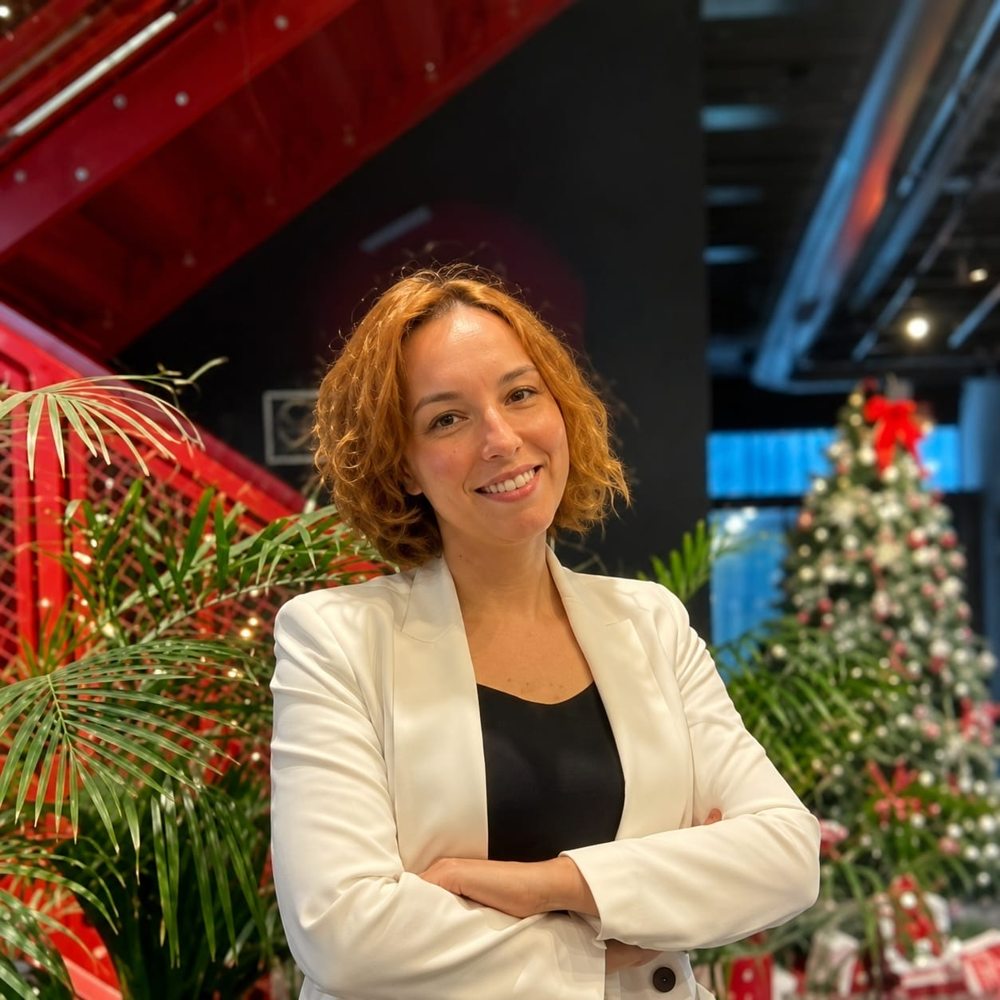
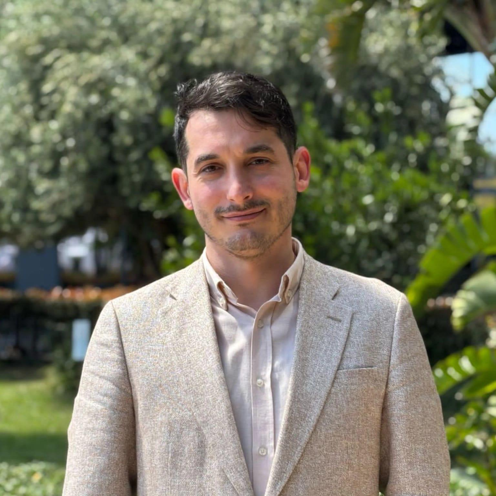
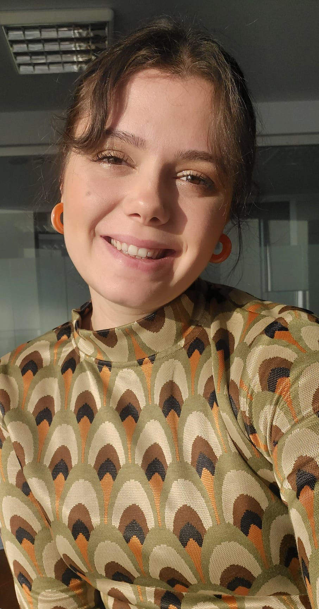
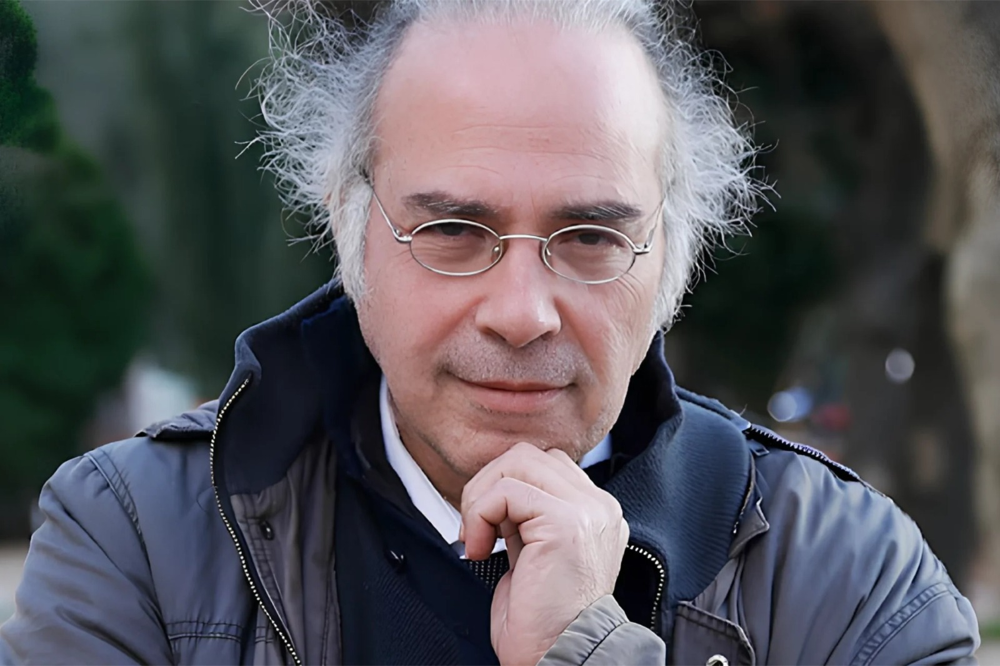
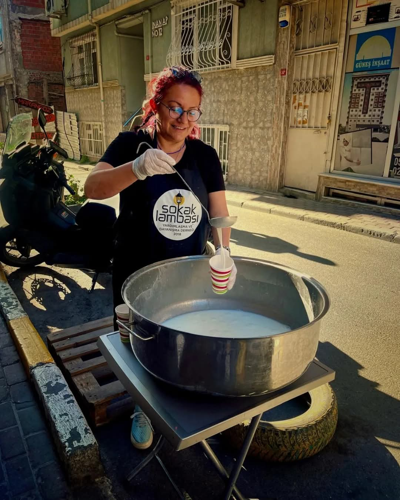
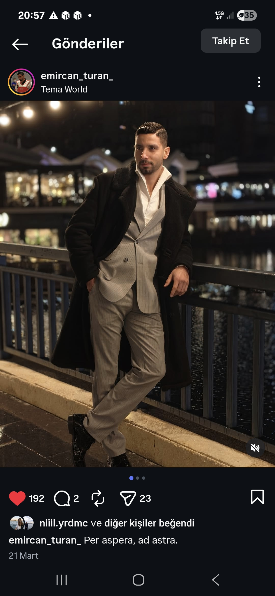
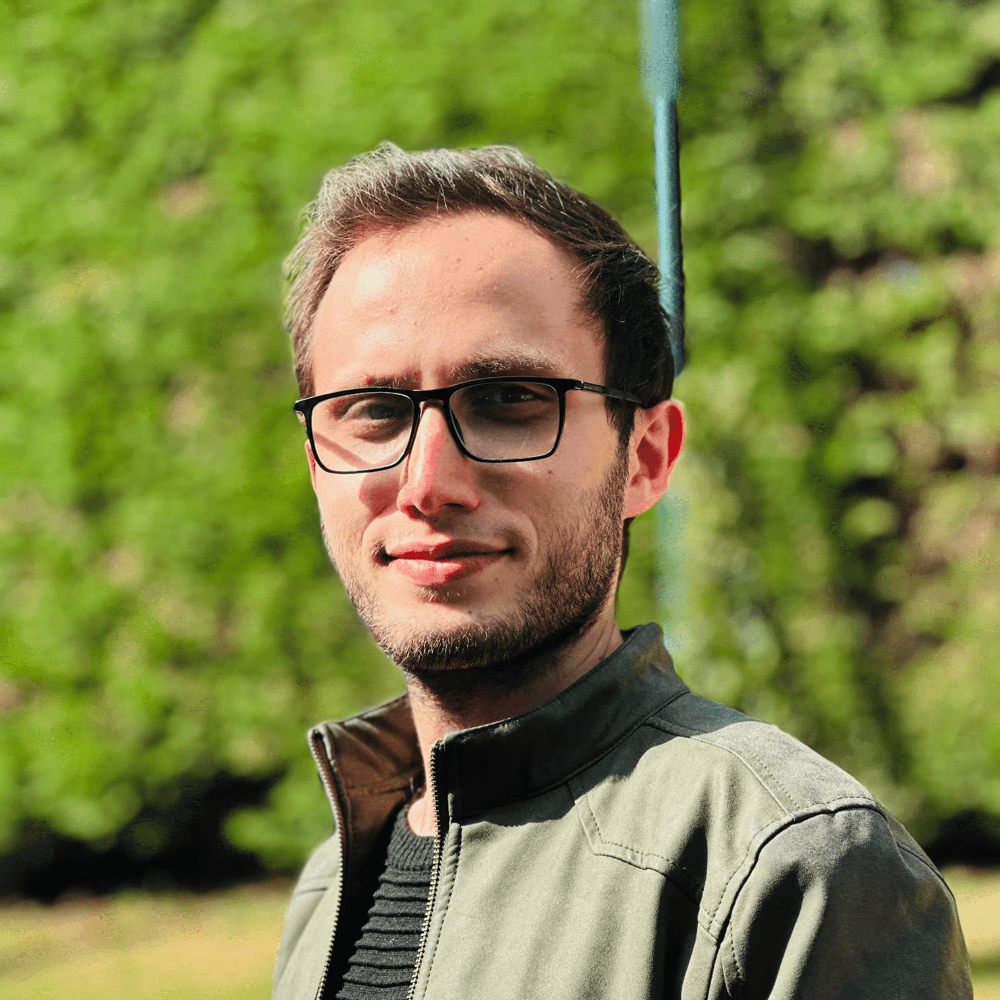
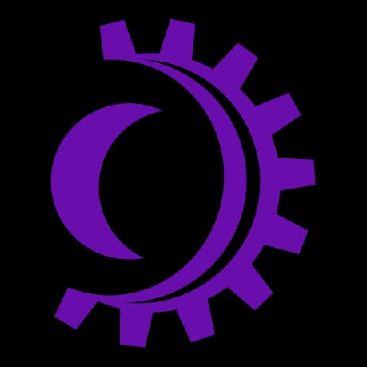
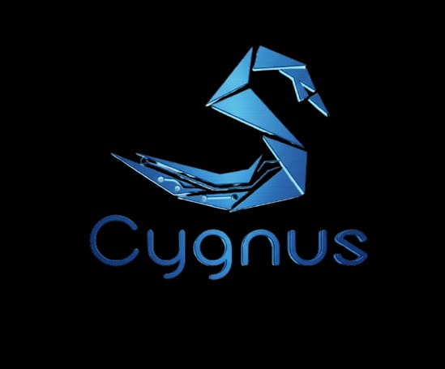

Konuşmacılarımız
Zenith Zirve 2026'da ağırlayacağımız değerli konuşmacılarımız

Ayrin İbiş
Latro Kimya Kurucu Ortak
Sürdürülebilir kimya ve inovasyon odaklı faaliyet gösteren Latro Kimya'nın kurucu ortaklarından ve yöneticilerinden (kendi tabirleriyle "Kaşif") biridir. Polimer kimyası alanında 16 yılı aşkın deneyime sahip bir kimya mühendisidir

Doç. Dr. Hasan Kütük
Yıldız Teknik Üniversitesi, Davutpaşa Kampüsü Eğitim Bilimleri Bölüm Başkan Yardımcısı
Doç. Dr. Hasan Kütük, eğitim bilimleri, psikolojik danışmanlık ve eğitim psikolojisi alanlarında çalışmalar yürüten bir akademisyendir. Lisans eğitimini Eğitim Bilimleri alanında tamamlamış, aynı zamanda Psikoloji bölümünde çift anadal yapmıştır. Yüksek lisansını Rehberlik ve Psikolojik Danışmanlık alanında, doktorasını ise Marmara Üniversitesi Eğitim Bilimleri Enstitüsünde tamamlamıştır.
Psikolojik danışmanlık, pozitif psikoloji, psikolojik dayanıklılık, ekopsikoloji ve gençlerin ruh sağlığı konularında araştırmalar yürüten Kütük, ulusal ve uluslararası akademik yayınlara sahiptir. Hâlen Yıldız Teknik Üniversitesi Eğitim Fakültesi Eğitim Bilimleri Bölümünde öğretim üyesi olarak görev yapmakta ve akademik çalışmalarını sürdürmektedir.

Öğr. Gör. Halenur Kütük
İstanbul Esenyurt Üniversitesi, Sağlık Bilimleri Fakültesi Çocuk Gelişimi Bölümü
Öğr. Gör. Halenur Kütük, çocuk gelişimi, aile danışmanlığı ve eğitim alanlarında çalışmalar yürüten bir akademisyendir. Lisans eğitimini Medipol Üniversitesi Sağlık Bilimleri Fakültesi Çocuk Gelişimi Bölümünde tamamlamış, ardından lisansüstü eğitimine devam etmiştir. Hâlen İstanbul Esenyurt Üniversitesi Sağlık Bilimleri Fakültesi Çocuk Gelişimi Bölümünde öğretim görevlisi olarak görev yapmaktadır.
Akademik çalışmalarında çocuk gelişimi, aile içi ilişkiler, ebeveynlik, internet bağımlılığının çocuklar üzerindeki etkileri, öğretmenlerin mesleki yeterlilikleri ve eğitim süreçleri gibi konulara odaklanmaktadır. Ulusal akademik dergilerde yayımlanmış bilimsel makaleleri bulunan Kütük, çocukların gelişimini destekleyen aile ve eğitim ortamlarının güçlendirilmesine yönelik araştırmalar yürütmektedir.
Eğitim ve araştırma faaliyetlerinin yanı sıra çeşitli seminer, tanıtım programı ve akademik etkinliklerde yer alan Halenur Kütük, çocuk gelişimi alanında eğitim, araştırma ve toplumsal farkındalık çalışmalarını sürdürmektedir.

Dr. Yavuz Dizdar
Radyasyon Onkolojisi Doktoru
Dr. Yavuz Dizdar, İstanbul Üniversitesi Onkoloji Enstitüsü'nde görevli radyasyon onkolojisi uzmanı ve akademisyendir. Geleneksel tıbbi tedavi yaklaşımlarının yanı sıra beslenme, doğal ürünler ve kanser ilişkisine dair ses getiren, ezber bozan açıklamaları ve yazdığı kitaplarla tanınmaktadır.

Serap Irmak
Sokak Lambası Yardımlaşma ve Dayanışma Derneği Kurucusu
Serap Irmak, 1972 İstanbul doğumludur. Sosyal sorumluluk çalışmalarına 1999 Marmara Depremi sonrası başlamış, afet bölgelerinde yardım organizasyonları ve ihtiyaç sahiplerine yönelik destek faaliyetleri yürütmüştür. 2014 yılından itibaren evsiz bireyler ve dezavantajlı çocuklarla aktif çalışmalar gerçekleştirmiş; 2016–2017 yıllarında evsizlerin sosyal hayata uyumunu destekleyen gelişim atölyeleri kurmuştur. 2018 yılında Sokak Lambası Yardımlaşma ve Dayanışma Derneği’ni kurarak evsizlere günlük sıcak yemek dağıtımı, afet yardımları ve dezavantajlı gruplara yönelik sosyal projeler yürütmektedir. 2022 En Başarılı Kadın Girişimci ve 2025 Meslekte Yüksek Hizmet Ödülü sahibidir. Evli ve iki çocuk annesidir.

Emircan Turan
İstanbul Büyükşehir Belediyesi Taekwondo Takımı Kaptanı
Beş yaşında Türk Hava Kuvvetleri'nde tekvando ile tanışan Emircan Turan, 20 yılı aşkın süredir bu sporu sürdürüyor. Birçok kez Türkiye şampiyonu olarak önemli başarılara imza atan Turan, aynı zamanda Avrupa üçüncülüğü ve uluslararası arenada birçok madalya sahibi. Marmara Üniversitesi Spor Bilimleri Fakültesi mezunu olan Emircan Turan, hâlen İstanbul Büyükşehir Belediyesi Tekvando Takımı'nın kaptanlığını yürütüyor.

Avni Bilal Demirtaş
Arcode Digital Kurucusu
Avni Bilal Demirtaş, teknoloji ve girişimcilik alanlarında Türkiye ve yurt dışında projeler yürüten bir yazılım girişimcisidir. Girişimcilik yolculuğuna lise yıllarında kurduğu SinovA şirketiyle başlamış, Koç Holding'in sponsorluğuyla ulusal başarı elde etmiş ve ESP sertifikası almaya hak kazanmıştır. YTÜ Matematik Mühendisliği mezunu olan Demirtaş, farklı ülkelerde mobil yazılım uzmanı ve teknik lider olarak aktif roller üstlenmiştir. 2022'de kurduğu Arcode Digital ile 11 ülkede 100'den fazla şirkete danışmanlık ve yazılım hizmetleri sunmaktadır. Bugün şirketinin yanı sıra mezunu olduğu Genç Başarı Eğitim Vakfı'nda mentor olarak görev yapmakta ve etkileyici konuşmalarıyla binlerce gence ilham vermeye devam etmektedir.

Uzm. Dyt. Şevval Beyza Kulaksız
Uzman Diyetisyen
Uzman Diyetisyen Şevval Beyza Kulaksız, Medipol Üniversitesi Beslenme ve Diyetetik Bölümü'nden mezun olmuş, ardından Klinik Beslenme ve Diyetetik Yüksek Lisans Programı'nı başarıyla tamamlamıştır. Yüksek lisans tez çalışmasında, son yıllarda bilim dünyasında giderek daha fazla önem kazanan bağırsak-beyin ekseni kapsamında "duygusal yeme davranışı ile bağırsak sağlığı arasındaki ilişkiyi" incelemiştir.
Meslek hayatına kendi beslenme ve danışmanlık merkezinde devam eden Kulaksız; obezite, kilo yönetimi, bağırsak sağlığı, duygusal yeme davranışı ve hastalıklarda tıbbi beslenme tedavisi alanlarında çalışmalarını sürdürmektedir. Danışanlarına bilimsel temelli, sürdürülebilir ve kişiye özel beslenme yaklaşımları sunmaktadır.
Lisans eğitimi süresince Medipol Üniversitesi Akreditasyon Temsilcisi ve Beslenme ve Diyetetik Bölümü Ölçme ve Değerlendirme Komisyonu Öğrenci Temsilcisi olarak görev almış, ayrıca TÜBİTAK 2209-A kapsamında yürütücülüğünü üstlendiği akademik araştırma projesini başarıyla tamamlamıştır.
Bilimsel araştırmaları klinik uygulamalarla birleştiren yaklaşımıyla, beslenme biliminin güncel gelişmelerini danışanlarına ve meslektaşlarına aktarmaya devam etmektedir.

#10906 Lunea Lumen
FIRST Robotics Competition (FRC) Takımı
İstanbul Üsküdar merkezli, Türkiye'nin farklı illerinden bir araya gelen 11 lise öğrencisi ve 4 mentörden oluşan bir FIRST Robotics Competition (FRC) takımıdır. "Ay yükseldiğinde, kurtlar ışığın hayalini kurar" sloganıyla yola çıkan ekip, bilimi ve mühendisliği yaymayı ve STEM alanında kadın temsiliyetini güçlendirmeyi hedefler.

Cygnus Robotics (#9473)
FIRST Robotics Competition (FRC) Takımı
İstanbul, Esenyurt'tan yarışmalara katılan Cygnus Robotics, gençlerin STEM alanındaki gelişimlerini destekleyen aktif bir FIRST Robotics Competition (FRC) takımıdır. Takım; tasarım, yazılım, elektronik ve medya alt takımlarıyla kapsamlı bir robotik ekosistemi yürütmektedir.